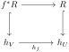

A topology on a category specifies which local tests suffice to recover an object defined over a test object. The tests are arrows, not necessarily subsets. Sieves collect all further restrictions of a test family, so their pullback can be defined even when a fiber product of test objects does not exist.
We begin with this sieve definition. Covering families give shorter formulas when their pullbacks exist, and will be recovered as presentations of the topology. Representability is a separate property: a topology need not make every representable presheaf a sheaf.
Section1.1Test objects and restrictions
Definition1.1.
A presheaf on a small category \(\mathcal C\) is a functor \(F:\mathcal C^{\op}\to\Set\text{.}\) For \(f:V\to U\) and \(s\in F(U)\text{,}\) write \(s|_f=F(f)(s)\text{.}\) The representable presheaf of \(U\) is \(h_U(V)=\Hom_{\mathcal C}(V,U)\text{.}\) A presheaf morphism commutes with all restrictions.
Sections over \(U\) are the elements of \(F(U)\text{;}\) an arrow \(V\to U\) gives a restriction even if it is not a monomorphism. Yoneda gives a natural bijection \(\Hom_{\PSh(\mathcal C)}(h_U,F)\simeq F(U)\text{.}\) Under it, a natural transformation sends \(\id_U\) to the corresponding section. This description will translate a sheaf condition into a restriction map between sets of natural transformations.
Limits and colimits of presheaves are computed objectwise. Their existence therefore does not require limits or colimits in \(\mathcal C\text{.}\) In particular, the presheaf pullback of representables exists even when it is not representable. The distinction is useful in the definition that follows.1
Definition1.2.
A sieve \(R\) on \(U\) is a subpresheaf \(R\subseteq h_U\text{.}\) Equivalently, it consists of arrows to \(U\text{,}\) with the property that \(f\in R(V)\) and \(g:W\to V\) imply \(fg\in R(W)\text{.}\) Its pullback along \(f:V\to U\) is the sieve
The sieve generated by a family \((f_i:U_i\to U)_{i\in I}\) consists of all arrows factoring through at least one \(f_i\text{.}\)
There is no factorization uniqueness in the last definition. An arrow may factor through several members in several ways. Matching data must give the same answer for every such factorization. The largest sieve is \(h_U\text{,}\) and the smallest is the empty presheaf. Intersections and unions of sieves are formed as subpresheaves.
Proposition1.3.
Sieve pullback satisfies \(\id_U^*R=R\) and \(g^*f^*R=(fg)^*R\text{.}\) It preserves intersections and unions. If \(f:V\to U\) belongs to \(R\text{,}\) then \(f^*R=h_V\text{.}\) The square
A section over \(W\) of the right-hand side is a pair consisting of \(g:W\to V\) and an arrow in \(R(W)\) equal to \(fg\text{.}\) Thus it is exactly an arrow in the defining set for \(f^*R(W)\text{.}\) The other assertions follow by substitution in that set; if \(f\in R\text{,}\) closure under precomposition includes every \(fg\text{.}\)

A pullback square of presheaves, with f star R mapping to R above and h V mapping to h U below, and inclusions on the vertical arrows.
Figure1.4.Sieve pullback is formed in presheaves, whether or not the test category has fiber products.
For a poset viewed as a category, a sieve is a downward closed set of objects below \(U\text{.}\) For \(\operatorname{Open}(X)\text{,}\) this is a family of open subsets closed under passage to smaller opens. For a category with automorphisms, the closure condition also includes their action; it cannot be replaced by a picture consisting only of inclusions.
The definitions and their variance can be compared with Stacks, §7.47. Its later sieve formulation applies without a representability assumption on arrows.
Section1.2Covering sieves and local consequences
Definition1.5.
A Grothendieck topology \(J\) on \(\mathcal C\) assigns a set \(J(U)\) of covering sieves to each object \(U\text{,}\) subject to the following axioms.
The maximal sieve \(h_U\) covers \(U\text{.}\)
If \(R\in J(U)\) and \(f:V\to U\text{,}\) then \(f^*R\in J(V)\text{.}\)
If \(R\in J(U)\) and \(S\) is a sieve on \(U\) such that \(f^*S\in J(V)\) for every \(f:V\to U\) in \(R\text{,}\) then \(S\in J(U)\text{.}\)
A site is a pair \((\mathcal C,J)\text{.}\) The last axiom is local character, also called transitivity.
A property holds locally over \(U\) if the arrows on which it holds contain a covering sieve. Usually those arrows already form a sieve. Local character says that a condition holding locally after a covering test holds locally before the test. This is the step that combines two successive shrinkings in a proof without points.
Proposition1.6.
Covering sieves have the following properties.
If \(R\subseteq S\subseteq h_U\) and \(R\) covers, then \(S\) covers.
The intersection of finitely many covering sieves covers.
Suppose \(R\) covers \(U\text{,}\) and for each arrow \(f:V\to U\) in \(R\) choose a covering sieve \(S_f\) on \(V\text{.}\) The sieve generated by all composites \(fg\text{,}\) for \(g\in S_f\text{,}\) covers \(U\text{.}\)
Proof.
For the first assertion, \(f^*S=h_V\) whenever \(f\in R(V)\text{,}\) so local character applies. If \(R\) and \(S\) cover, then for \(f\in R(V)\) we have \(f^*(R\cap S)=f^*S\text{,}\) a covering sieve. Local character gives the binary intersection; induction gives the finite assertion, including the maximal sieve for the empty intersection. For the last assertion, the pullback of the generated sieve along \(f\) contains \(S_f\text{,}\) hence covers. Apply local character once more.
Finite intersection supplies a common refinement for finitely many local choices. Arbitrary intersections need not cover. On \(\operatorname{Open}(\R)\text{,}\) let \(R_n\) be the sieve on \(\R\) consisting of opens of diameter less than \(1/n\text{.}\) Each sieve covers, since sufficiently small intervals cover \(\R\text{.}\) Their intersection contains only the empty open and does not cover \(\R\text{.}\) An argument involving infinitely many local sections cannot silently choose one common refinement from this finite calculus.
Definition1.7.
A topology \(J'\) is finer than \(J\) if \(J(U)\subseteq J'(U)\) for every \(U\text{.}\) Given any set of sieves designated as covering, their generated topology is the intersection of all Grothendieck topologies containing them. A family is \(J\)-covering if its generated sieve belongs to \(J\text{.}\)
The intersection in this definition is a topology: each of the three axioms is preserved by intersection. The topology containing all sieves supplies at least one term. Smallness ensures that the collection being intersected is a set at a suitable scale. A generated topology may have many covering sieves not originally designated. These encode the pullbacks and local composites forced by the axioms.
Terminology for extreme topologies is not uniform. We call the topology containing only maximal sieves the trivial topology, and the topology containing every sieve the chaotic topology.2 A presheaf is automatically a sheaf for the trivial topology. The chaotic topology requires exactly one section on every object, because even the empty sieve covers.
Section1.3Covering families and pretopologies
Definition1.8.
Suppose that \(\mathcal C\) has fiber products. A pretopology specifies families \(\{U_i\to U\}\text{,}\) called basic covers, such that isomorphisms are basic covers, pullbacks of basic covers are basic covers, and composites of a basic cover with basic covers of each member are basic covers. Empty families are allowed if specified. The associated topology consists of sieves containing a basic cover.
Proposition1.9.
The associated topology in Definition 1.8 is a Grothendieck topology. Every covering sieve contains a basic cover. A family is covering for that topology exactly when it admits a refinement by a basic cover, where refinement means that every arrow in the refining family factors through an arrow of the original family.
Proof.
Isomorphism covers imply the maximal-sieve axiom. Pull back a basic cover contained in \(R\) to prove stability. For local character, choose a basic cover \(\{U_i\to U\}\) in \(R\text{.}\) A basic cover of \(U_i\) contained in the pullback of \(S\) exists for each \(i\text{.}\) Their composites form a basic cover contained in \(S\text{.}\) The refinement description is exactly containment of the generated sieve.
One can weaken the fiber-product hypothesis by requiring only that the arrows occurring in basic covers admit all the needed base changes. That is the covering-family convention used in Stacks, Sites. Our sieve definition does not impose even this condition. When a formula below displays \(U_i\times_U U_j\text{,}\) its existence is part of that formula’s assumptions.
Example1.10.
On \(\operatorname{Open}(X)\text{,}\) take basic covers to be open covers by inclusions. This is a pretopology, and a sieve on \(U\) covers precisely when the union of its domains is \(U\text{.}\)
Solution.
Pullback is intersection, and compositions of open covers still cover. If the union of the domains is \(U\text{,}\) all those domains themselves form a covering family in the sieve. Conversely, a sieve containing a covering family has union \(U\text{.}\) The empty family covers the empty open, and the sheaf condition there will impose a singleton set of sections.
Refining covers is useful, but a selected collection of test families should not be called a pretopology before its axioms have been checked. For arbitrary generators, testing a presheaf only on the initially listed families need not test their pullbacks or all the further covering sieves they generate. The pretopology theorem supplies exactly the closure needed for the familiar family formulation.
Section1.4Matching families and the sheaf condition
Definition1.11.
For a sieve \(R\) on \(U\text{,}\) a matching family in \(F\) is a natural transformation \(R\to F\text{.}\) A presheaf \(F\) is separated if
is injective for every covering sieve \(R\text{.}\) It is a sheaf if this map is bijective for every covering sieve. The category \(\Sh(\mathcal C,J)\) is the full subcategory of such presheaves.
In elements, a matching family chooses \(s_f\in F(V)\) for every \(f:V\to U\) in \(R\text{,}\) with \(s_{fg}=s_f|_g\text{.}\) A section \(s\in F(U)\) amalgamates it if \(s|_f=s_f\text{.}\) Separatedness means uniqueness of the amalgamation when one exists. The sheaf condition adds existence. These are statements about every test object, not merely about global sections.
Proposition1.12.
For a pretopology as in Definition 1.8, a presheaf \(F\) is a sheaf if and only if every basic cover gives an equalizer
It is separated if and only if the first arrow is injective for all basic covers.
Proof.
Let \(R\) be generated by the cover. A natural transformation \(R\to F\) gives the indicated sections on the \(U_i\) and their agreement on each fiber product. Conversely, for \(f:V\to U\) in \(R\text{,}\) choose a factorization \(V\to U_i\to U\) and restrict \(s_i\text{.}\) Two choices determine a map \(V\to U_i\times_U U_j\text{;}\) compatibility gives the same section on \(V\text{.}\) This constructs the natural transformation.
Now let \(S\) be any covering sieve and choose a basic cover inside it. Its matching data produce a section \(s\) on \(U\text{.}\) For \(f:V\to U\) in \(S\text{,}\) compare \(s|_f\) with the prescribed section on \(V\) after the pullback cover \(\{V\times_U U_i\to V\}\text{.}\) They agree there by naturality, hence agree by separatedness. Uniqueness is tested on the original basic cover. The same restriction argument proves the separated assertion.
If the family is empty, both products are singleton sets, and the equalizer condition is \(F(U)=\{*\}\text{.}\) Thus the empty-cover case is part of the definition. For abelian groups or modules the corresponding requirement is the zero object, whose underlying set is a singleton.
For a category without these fiber products, compatibility can instead be required whenever two arrows to members of the family have the same composite to \(U\text{.}\) This is exactly a matching family on the generated sieve. It is not necessary to invent an intersection object.
The two formulations are compared in Stacks, §7.48. We use the sieve version for constructions and the family version for calculations whose overlaps exist.
Section1.5Subcanonical and canonical topologies
Definition1.13.
A topology is subcanonical if every representable presheaf \(h_T\) is a sheaf. For a sieve \(R\) on \(U\text{,}\) say that \(R\) is universally representably effective if for every \(f:V\to U\) and every \(T\in\mathcal C\) the restriction
The second condition says that maps into every test object glue uniquely along the sieve, and continue to do so after every base change of the target. The base change is a sieve pullback, which always exists. When the relevant colimit exists, the bijection for \(f=\id_U\) states that \(U\) is the colimit of the domains in the sieve. The word universal adds the other arrows \(f\text{.}\)
Proposition1.14.
The universally representably effective sieves form a Grothendieck topology, called the canonical topology. It is the finest subcanonical topology. Thus \(J\) is subcanonical exactly when every \(J\)-covering sieve is universally representably effective.
Proof.
The maximal sieve has the stated bijection by Yoneda, and stability follows by composing base changes. For local character, suppose \(R\) has the universal property and \(f^*S\) has it for every \(f\in R\text{.}\) A matching family from \(S\) to \(h_T\) restricts to one on each \(f^*S\text{,}\) hence gives a map from the domain of \(f\) to \(T\text{.}\) Uniqueness on the pulled-back sieves makes these maps compatible as \(f\) varies. The property of \(R\) glues them to a map \(U\to T\text{.}\) On any arrow \(g:W\to U\) in \(S\text{,}\) agreement with the original family is tested after \(g^*R\) and follows by its uniqueness. The same argument after an arbitrary base change proves universality.
Every representable is a sheaf for this topology by its defining bijection with \(f=\id\text{.}\) Conversely, if all representables are \(J\)-sheaves, then the sheaf condition holds for \(f^*R\) whenever \(R\) is \(J\)-covering, since \(f^*R\) also covers. This is precisely the universal property in the definition.
This is a description of the canonical topology without an existence assumption on fiber products. With fiber products, covering families for it are the universal effective epimorphic families of Stacks, §7.12.3
Example1.15.
The canonical topology of \(\operatorname{Open}(X)\) is its usual open-cover topology.
Solution.
Compatible inclusions into an open \(T\) glue if the union of the covering domains is \(U\text{,}\) so the usual topology is subcanonical. Conversely, let \(R\) be canonical on \(U\) and let \(W\) be the union of its domains. There is a matching family \(R\to h_W\text{.}\) It must extend to \(h_U\to h_W\text{,}\) which says \(U\subseteq W\text{.}\) Hence \(W=U\text{.}\)
Example1.16.
Give the category with two objects \(0,1\) and one nonidentity arrow \(0\to1\) the chaotic topology. The representable \(h_0\) is not a sheaf.
Solution.
The empty sieve covers \(1\text{,}\) so a sheaf must have a singleton set of sections there. But \(h_0(1)=\varnothing\text{.}\) In fact every sheaf for the chaotic topology is the terminal presheaf. Sheafifying representables therefore need not preserve the full faithfulness of Yoneda.
Subcanonical does not mean that all sheaves are representable. It means that representables embed among sheaves, with their original morphisms. Even when this fails, \(ah_U\) still satisfies \(\Hom(ah_U,F)=F(U)\) for a sheaf \(F\text{,}\) once sheafification has been constructed. These sheafified representables provide the generators used in the topos theory.